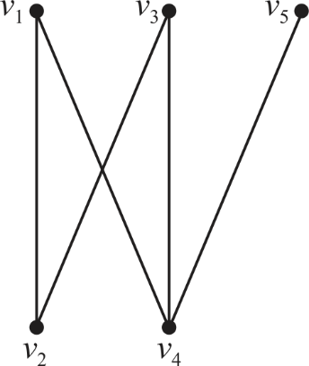

Hamiltonian graph: A graph that possesses a Hamiltonian cycle is called a Hamiltonian graph. In the absence of a Hamiltonian cycle, the graph is called non-Hamiltonian.
Hamiltonian cycle: A Hamiltonian cycle is a circuit or cycle that that visits each and every node of a graph exactly once.
• Bipartite graph is a graph in which the vertices can be divided into two disjoint sets such that an edge originating in one disjoint set always moves into another disjoint set.

The above diagram is an example of bipartite graph. The vertices are divided into two disjoin sets such that edge from one set always moves into vertex of another set.
• Owing to the above definition, every vertex has its adjacent vertex only in the disjoint set other than its own.
• So, in a Hamiltonian cycle, the edge must move from one disjoint set to another all the time.
• Eventually, the edge must come back to the original starting vertex. This requires equal number of vertices to be present in both disjoint sets so that the edge can travel from one disjoint set to other and alternate between the two and finally come back to the originating vertex.
So,
Since, , therefore, even number of vertices must present in a bipartite graph for it to be Hamiltonian. If number of vertices is Odd, then it can’t be Hamiltonian.
Thus, it is proved that an undirected bipartite graph which has an odd number of vertices is always non-Hamiltonian.
Consider HAM–CYCLE = and HAM–CYCLE .
For each node, exactly two incident edges participate in the cycle.
Define an algorithm CHECK–HAM–CYCLE to find the Hamiltonian cycles.
• The algorithm takes any graph .
• It should return true if have a Hamiltonian cycle.
• It should return false if doesn’t have a Hamiltonian cycle.
• It should be a polynomial–time algorithm.
Now design another algorithm GENERATE–HAM–CYCLE that
generates the order of a legitimate Hamiltonian cycle of
that
generates the order of a legitimate Hamiltonian cycle of  if
exist.
if
exist.
Algorithm CHECK–HAM–CYCLE:
1 select a node
2 is the edges
incident to the node  .
.
3 calculate the pair such that
contains a Hamiltonian cycle.
4 if Hamiltonian cycle exists then
5 return true
6 else
7 return false
Clearly, the calculation of Hamiltonian cycle with all possible pairs requires polynomial time. So the algorithm is a polynomial time algorithm.
Algorithm GENERATE–HAM–CYCLE:
1 for each
2 If CHECK–HAM–CYCLE returns
true then
3 print the Hamiltonian cycle of .
The above algorithm iterates times and
calls the algorithm CHECK–HAM–CYCLE once per
iteration. The total running time of the algorithm will be the
product of  and
polynomial time which is still a polynomial–time (degree of
polynomial will be increased by 1).
and
polynomial time which is still a polynomial–time (degree of
polynomial will be increased by 1).
Therefore, if HAM–CYCLE then the problem of listing the vertices of a Hamiltonian cycle in order is solvable in polynomial–time.
There are lots of problem which does not have any algorithm to solve it in a polynomial time. These types of problems are categorizes in special type of class called as NP-Complete.
Suppose there are two languages  and
and
 belongs
to NP. There also exist 2 non-deterministic decider and
such
that is decided
byand
is
decided byin their
non-deterministic time and
respectively.
belongs
to NP. There also exist 2 non-deterministic decider and
such
that is decided
byand
is
decided byin their
non-deterministic time and
respectively.
Suppose  is an input
to machine M (a non-deterministic poly-time decider). The
same input is applied to each operation.
is an input
to machine M (a non-deterministic poly-time decider). The
same input is applied to each operation.
Intersection:
1. Run on
//check accept the input
2. if
3. Run on
//check also accept the input
4. if
//return accept
5. return 1
//reject
6. return 0.
In intersection, an input is accepted only when it is accepted
by both non-deterministic poly-time deciders
and.
The total time taken in processing of n long input is .
This shows that .
.
Union:
1. Run on
//check accept the input
2. if
//return accept
return 1
3. else
4. Run on
//check also accept the input
5. if
//return accept
6. return 1
7. else
//return reject
8. return 0.
In union, an input is accepted when it is accepted by any one
non-deterministic poly-time deciders
and.
The total time taken in processing of n long input is.
This shows that.
Concatenation:
1. At first split the input into 2
inputs  and
and .
.
2. Run on
//check accept the input
3. if
4. Run on
//check also accept the input
5. if
//return accept
6. return 1
7. else
//return reject
8. return 0.
9. else
//return reject
10 return 0
In concatenation, an input is split
into two inputs and. An input
is
accepted when is accepted
by any one non-deterministic poly-time deciders and
is
successfully accepted by. The total
time taken in processing of n long input is.
This shows that.
//check input is empty
1. if
//return accept
2. return 1
3. Select k between
4. Now, Split into
k inputs.
//use for loop to check all inputs
5. for  to
k
to
k
6. Run on
//check accept the input
7. if
//return reject
8. return 0
//return accept
9. return 1
Initially an input is n
bit long. A single ‘for’ loop is used to process inputs.
Non-deterministic poly-time deciders process the
each input. The time taken by in
processing one input is . Therefore
the total processing time is.
This shows that.
NP under Complement:
Many researcher have studied about the NP problem but they does not found any conclusion whether NP class closed under complement.
If P is closed under complement then P=NP. This means NP is also closed under complement. If P is not closed under complement then NP also does not closed under complement.
Any language L is decidable by an algorithm ‘A’ only when
• If there exist an item ‘a’ which belongs to ‘A’ ( ) and A (a) = 1.
• If x L then A(a) = 0
As per the definition of the NP class, a language L belongs to NP only if :
• There exist a two-input polynomial time algorithm A and a constant c.
• The Language
• Let y be a certificate with |y| = O(|a|c) such that A(a, b) =1
If the above constraints are satisfied, then the algorithm A verifies the language L in polynomial time.
Design an algorithm A’, for a language L in NP to decide L in times of for some constant k.
Algorithm A’:
For different values of ‘ y’
If A(a, b) = = 1
return 1
else
return 0
Calculating the running time:
• Number of possible y are 2|y|
• Here, |y| = O(|x|c)
• Therefore, numbers of possible y are .
• For each y, the algorithms runs A(x, y) once, in polynomial time of O(|x|t) for some constant t.
• Therefore, the total running time of the algorithm is
Hamiltonian Path Problem
Consider a directed acyclic graph having a Hamiltonian path then proving by an algorithm takes polynomial time to run for:
.
Hamiltonian graph is the one which possess the Hamiltonian path and Hamiltonian path is the longest path in the graph that is the path which contains all the vertices of the graph.
A directed acyclic graph must have at least one vertex with indegree 0. Note that a vertex with indegree 0 must be at the beginning of every path and in particular at the start of a Hamiltonian path. So if a DAG has two vertices with in-degree 0 then it can’t have a Hamiltonian path since they both would have to be at the start of the path.
Now, suppose that a DAG G does have a Hamiltonian path then node s must be the unique node with indegree 0 in G so it can easily be identified. Furthermoremust be a Hamiltonian path in the DAG G’ that results after deleting from G vertex s and all of the edges leaving it. From above we see that if G’ has a Hamiltonian path then it must contain a unique vertex s’ with in-degree 0 and s’ is the start of Hamiltonian path. From the above discussion the algorithm is as:
1. Create an array in[v] which stores the in-degree of vertex v
2. Search for vertex with and assign v to
3. If more than one vertex with
// if no path found
4. return ‘NO HAMILTONIAN PATH’
5. set
6. for
7.
// NumZeroIn represents the number of nodes with indegree 0.
8.
// check each vertex with indegree 0
9. for all vertices with degree 0 making edges
10. 
11. if
12.
13.
// more than one vertex with indegree 0
14. if
15. return “NO HAMILTONIAN PATH”
16. else
17.
18. return HPFor the creation of an empty array it takes time and in
the second step for the search of each vertex in the graph for
indegree as 0 it again takes time. The
for loop in this algorithm takes time in the form of that is
 which is a
polynomial and so this algorithm is the polynomial time algorithm.
Hence, the algorithm for is the
which is a
polynomial and so this algorithm is the polynomial time algorithm.
Hence, the algorithm for is the
polynomial time algorithm.